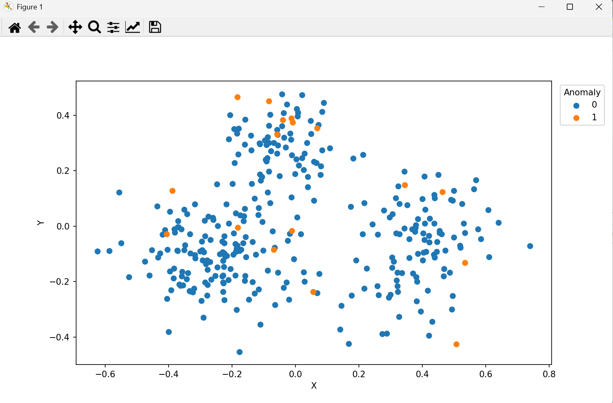

DOKUMENTASI PENGERJAAN WORKFLOW Projek Pra UTS PSD#
Koneksi Database#
Menggunakan PostgreSQL Connector untuk melakukan koneksi ke database
configurasi seperti berikut:
host: localhost
db: db_ecoli
port: 2005
username: postgres
password: zanra2401
Memilih Table#
Gunakan DB Table Selector untuk memilih table yang ingin di gunakan:
configurasi seperti berikut:
Schema : public
Table : ecoli_data
Membaca Data#
digunakan untuk membaca data dari database
Missing Value Filter#
Memfilter Missing Value namun di data ecoli ini tidak ada missing value
Deteksi Outlier menggunakan ABOD#
mendteksi outlier dengan ABOD:
Code#
# Copy input to output
from pycaret.anomaly import *
table = input_table_1.copy()
feature_numeric = ["mcg", "gvh", "lip", "chg", "aac", "alm1", "alm2"]
feature_non_numeric = ["id", "name", "class"]
s = setup(data=table[feature_numeric])
abod_model = create_model("abod", fraction=0.05)
df_abod = assign_model(abod_model)
output_table_1 = df_abod.merge(table[feature_non_numeric], left_index=True, right_index=True)
Output#

Ploting Data Outlier#
Code#
from sklearn.decomposition import PCA
import pandas as pd
import matplotlib.pyplot as plt
ecoli_df = input_table_1.copy()
fitur = ["mcg", "gvh", "lip", "chg", "aac", "alm1", "alm2"]
pca = PCA(n_components=2)
reduced = pd.DataFrame(pca.fit_transform(ecoli_df[fitur])).reset_index(drop=True)
ecoli_df = ecoli_df.reset_index(drop=True)
reduced = reduced.merge(ecoli_df["Anomaly"], left_index=True, right_index=True)
plt.figure(figsize=(10, 6))
for i in [0, 1]:
plt.scatter(reduced[reduced["Anomaly"] == i][0], reduced[reduced["Anomaly"] == i][1], label=i)
plt.xlabel("X")
plt.ylabel("Y")
plt.legend(title="Anomaly", bbox_to_anchor=(1.12,1), loc="upper right")
output_table_1 = reduced
plt.show()
Output#

Pembersihan Outlier#
Membersihkan outlier
Code#
import pandas as pd
ecoli_df = input_table_1.copy()
fitur = ["mcg", "gvh", "lip", "chg", "aac", "alm1", "alm2"]
ecoli_df = ecoli_df[(ecoli_df["Anomaly"] == 0) | (ecoli_df["class"] == "imL") | (ecoli_df["class"] == "imS")][["id", "name", "mcg", "gvh", "lip", "chg", "aac", "alm1", "alm2", "class"]]
output_table_1 = ecoli_df
Output#
Penyeimbangan Data#
Menggunakan Python Script
Distribusi Kelas Awal Pada Data#
Code#
# Copy input to output
ecoli_df = input_table_1.copy()
from imblearn.over_sampling import SMOTE
fitur = ["mcg", "gvh", "lip", "chg", "aac", "alm1", "alm2"]
p = ecoli_df[fitur]
q = ecoli_df["class"]
p_resampled, q_resampled = SMOTE(random_state=42, k_neighbors=1).fit_resample(p, q)
merge_smote = p_resampled.merge(q_resampled, left_index=True, right_index=True)
output_table_1 = merge_smote